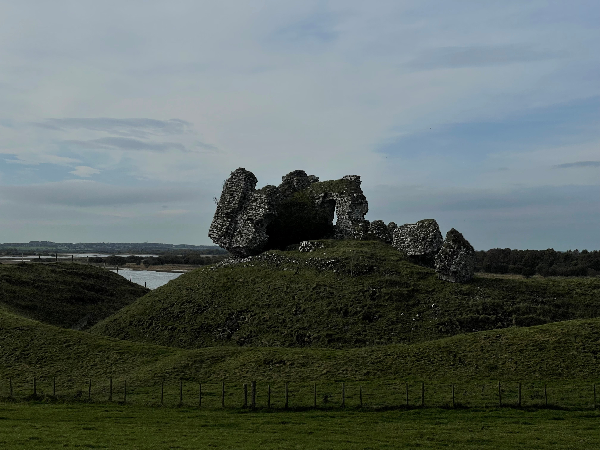
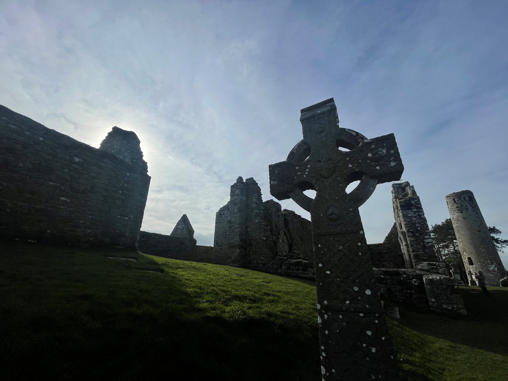
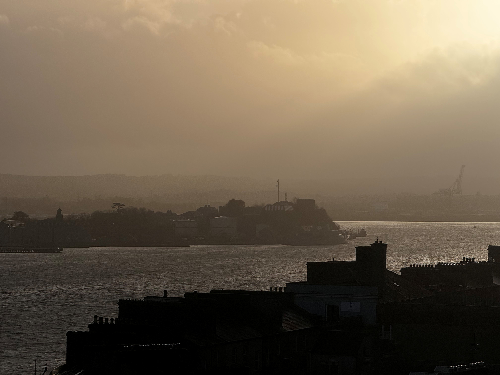
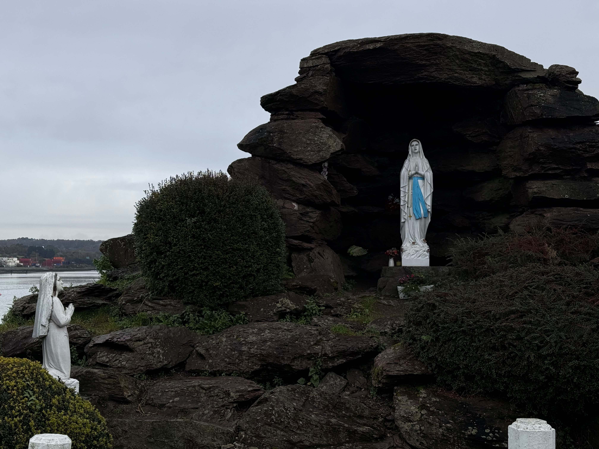

Andreas Krautwald
Photography and other projects
Rail Foundation
Soundcloud
Mastodon
Photography

Cluain Mhic Nóis, County Offaly, Ireland

Cluain Mhic Nóis, County Offaly, Ireland

Black Rock, County Cork, Ireland

Black Rock, County Cork, Ireland